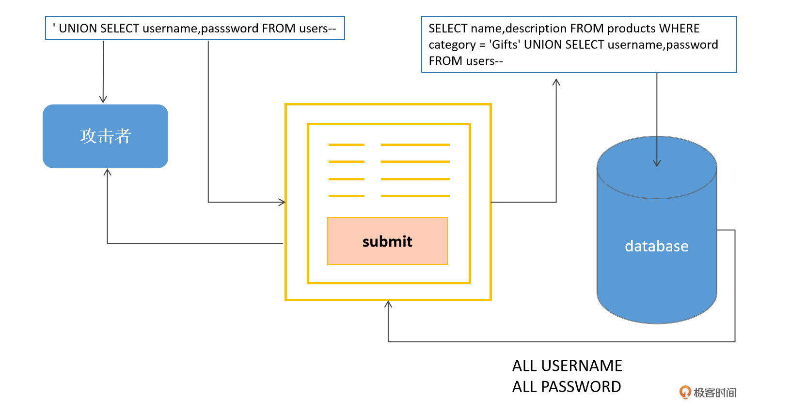
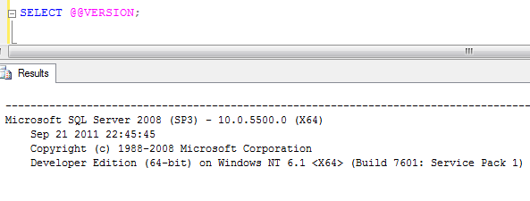

- 00 导读 解读OWASP Top10 2021.md.html
- 00 开篇词 从黑客的视角找漏洞，从安全的角度优雅coding.md.html
- 01 失效的访问控制：攻击者如何获取其他用户信息？.md.html
- 02 路径穿越：你的Web应用系统成了攻击者的资源管理器？.md.html
- 03 敏感数据泄露：攻击者如何获取用户账户？.md.html
- 04 权限不合理：攻击者进来就是root权限？.md.html
- 05 CSRF：为什么用户的操作他自己不承认？.md.html
- 06 加密失败：使用了加密算法也会被破解吗？.md.html
- 07 弱编码：程序之间的沟通语言安全吗？.md.html
- 08 数字证书：攻击者可以伪造证书吗？.md.html
- 09 密码算法问题：数学知识如何提高代码可靠性？.md.html
- 10 弱随机数生成器：攻击者如何预测随机数？.md.html
- 11 忘记加“盐”：加密结果强度不够吗？.md.html
- 12 注入（上）：SQL注入起手式.md.html
- 13 注入（下）：SQL注入技战法及相关安全实践.md.html
- 14 自动化注入神器（一）：sqlmap的设计思路解析.md.html
- 15 自动化注入神器（二）：sqlmap的设计架构解析.md.html
- 16 自动化注入神器（三）：sqlmap的核心实现拆解.md.html
- 17 自动化注入神器（四）：sqlmap的核心功能解析.md.html
- 19 失效的输入检测（上）：攻击者有哪些绕过方案？.md.html
- 20 失效的输入检测（下）：攻击者有哪些绕过方案？.md.html
- 21 XSS（上）：前端攻防的主战场.md.html
- 22 XSS（中）：跨站脚本攻击的危害性.md.html
- 23 XSS（下）：检测与防御方案解析.md.html
- 24 资源注入：攻击方式为什么会升级？.md.html
- 25 业务逻辑漏洞：好的开始是成功的一半.md.html
- 26 包含敏感信息的报错：将安全开发标准应用到项目中.md.html
- 27 用户账户安全：账户安全体系设计方案与实践.md.html
- 28 安全配置错误：安全问题不只是代码安全.md.html
- 29 Session与Cookie：账户体系的安全设计原理.md.html
- 30 HTTP Header安全标志：协议级别的安全支持.md.html
- 31 易受攻击和过时的组件：DevSecOps与依赖项安全检查.md.html
- 32 软件和数据完整性故障：SolarWinds事件的幕后⿊⼿.md.html
- 33 SSRF：穿越边界防护的利刃.md.html
- 34 Crawler VS Fuzzing：DAST与机器学习.md.html
- 35 自动化攻防：低代码驱动的渗透工具积累.md.html
- 36 智能攻防：构建个性化攻防平台.md.html
- 大咖助场 数字证书，困境与未来.md.html
- 春节策划（一） 视频课内容精选：Web渗透测试工具教学.md.html
- 春节策划（三） 一套测试题，看看对课程内容的掌握情况.md.html
- 春节策划（二） 给你推荐4本Web安全图书.md.html
- 结束语 无畏前行.md.html
- 捐赠
12 注入（上）：SQL注入起手式
你好，我是王昊天。
从这节课开始，我们就进入了排名第三的风险种类——注入。
这是在上一份OWASP TOP 10榜单中排名第一的风险种类，同时也是在过去十年中最具威慑力的漏洞类型之一，关于这类安全风险出现了许多重大的漏洞，同时也有众多著名的安全工具致力于解决这类问题，其中最著名的安全工具之一就是sqlmap，作为SQL注入领域优秀的自动化检测工具，我们也会在之后的课程中深入探究。
那么什么是注入呢？
在著名的西游世界，就有许多次战斗生动地诠释了注入的威力，而这位善用注入的战斗大师就是我们勇敢机智的齐天大圣——孙悟空。在《西游记》中，孙悟空一共六次通过钻入敌人肚子的方式取得战斗的胜利。
注入
孙悟空的行为堪称注入攻击的典范，那么安全领域的注入攻击又是什么呢？
从抽象定义来说，注入攻击的本质是数据段与指令段的混淆，攻击者在原本应该作为数据段的输入中插入了恶意指令，同时将该恶意指令作为代码执行。正如孙悟空的战斗一般，妖怪肚子原本是消化食物用的，但却让孙悟空潜入其中，并且大显神威。
事实上，注入包含很多种类型，比如SQL注入、命令注入、XSS、资源注入等，其中SQL注入是最具代表性也是极为危险的一类漏洞，这一讲我们就从SQL注入入手来展开探讨。
查询过程与SQL注入

提到注入，就不得不提到查询过程。
以最常见的SQL注入为例，这类安全风险，就是将不可信的用户输入与SQL查询语句拼接产生的。事实上，SQL注入是Web安全领域最危险的漏洞种类之一，一方面SQL注入漏洞的利用过程比较简单，另一方面SQL注入漏洞可能导致数据库失窃、数据被篡改及清除等安全风险。在更严重的情况下，SQL注入可以通过应用程序传递恶意命令，控制托管数据库的操作系统，并以此为跳点成功进入内网。
SQL注入的危害
接下来我们来看一看SQL注入会产生哪些危害。
首先，SQL注入可能会导致数据的泄露。我们以一个电商系统为例，看看这个过程是怎么发生的。
在一个电商系统中，我们都会有一个个人信息页面用于编辑、展示和存储我们的相关信息，通常的URL地址如下：
https://example.com/user_info?username=talentsec
在这种场景下，我们可以选择使用这种SQL语句来实现相应功能：
SELECT * FROM users WHERE username = 'talentsec';
这里我们可以展开做一下思考，如果SQL语句变为如下格式，是否随着id的数值变化可以取得不同的数据呢？很明显是可以的。
SELECT * FROM users WHERE username = 'talentsec' or id = '1';
我们只需要尝试去修改username参数，将其设置为talentsec' or id = '1即可实现上述攻击过程。-
进一步地设想一种更复杂的场景，在这种场景下SQL语句不只有一个条件，除了用户名，还增加了账户活跃这一条件。
SELECT * FROM users WHERE username = 'talentsec' and account_status = 'alive';
因为SQL语句变得更加复杂了，如果我们还用之前的方式攻击，就会破坏语句完整性，导致攻击无法顺利进行：
SELECT * FROM users WHERE username = 'talentsec' or id = '1' and account_status = 'alive';
为了保证SQL语句的完整性，我们可以通过增加--注释符，让SQL语句重新恢复为合法格式，保证攻击能够顺利执行。调整后，username参数被设置为talentsec' or id = '1' ; -- and account_status = 'alive。 最终目的语句构造如下：
SELECT * FROM users WHERE username = 'talentsec' or id = '1' ; -- and account_status = 'alive';
可以发现，由于SQL注入漏洞的存在，攻击者可以通过调整参数内容，获取到本不应该访问到的数据，这就会造成业务系统关键数据的泄露。
除了会造成数据泄露外，SQL注入漏洞还可能修改程序的执行逻辑。
这个过程我们将在登录场景下复现。正常的Web应用系统都会具备登录功能，通过将用户输入的用户名及密码传入后端，程序可以在后端匹配账户信息来验证正确性，其中一种SQL语句实现方式如下：
SELECT * FROM users WHERE username = 'talentsec' and password = 'TALENTSEC';
如果该查询能够返回结果，则说明登录成功，否则说明登录失败。一名恶意的攻击者，可以构造如下SQL语句使其绕过登录限制，也就是说，攻击者可以在仅知道用户名的情况下，成功完成登录：
SELECT * FROM users WHERE username = 'talentsec';--' and password = 'test';
可以看到，在这次攻击中攻击者所使用的用户名是talentsec';--，密码是test。虽然真实密码并不是test，但攻击者却成功登录了talentsec账户。
SQL注入的危害是巨大的，其攻击过程也较为复杂，接下来我们就来进一步探讨如何发现以及实施SQL注入攻击。
SQL注入实战技法
漏洞发现
知道吗，对于SQL注入漏洞来说，最难的一点其实是发现漏洞，而非利用漏洞。因为正如我们前面讨论的，SQL注入漏洞的利用过程相对简单，只要能够发现漏洞，利用不是问题。
为了更准确地发现SQL注入漏洞，我们需要了解，应用程序在什么时候会与数据库通信。这里，我给你提供两点参考。
你首先需要关注的是，通过表单提交认证的过程。这一过程会将用户输入的凭据发送到应用程序后端，并与数据库中存储的凭据进行比对。另外，一些管理后台和CMS系统，通过用户传入的参数针对性查询数据的时候，也需要我们特别关注。
一名优秀的攻击者需要对应用系统的接口参数有全面的了解，这些参数包括POST请求中隐藏的字段，也包括HTTP Header和Cookie。接下来，攻击者需要对每个参数进行针对性的攻击尝试，并观测系统结果。通常，最初的攻击尝试由'和;组成，这两个字符分别用于闭合字符串以及SQL查询语句。如果存在SQL注入漏洞，这两个字符的输入很有可能会触发系统报错。除此以外，一些注释符（--和/**/等）以及SQL关键字（AND和OR等）同样也可以被用来检测SQL注入漏洞点。
值得一提的是，虽然我们常常通过观测系统报错的方法来判断SQL注入漏洞点，但是并非所有SQL注入漏洞都会触发显性的系统报错。许多时候我们也会遇见500 Server Error或者系统的自定义报错界面，这时我们就需要考虑使用盲注或是其他攻击方式。
SQL注入漏洞作为一个漏洞大类，利用方式是比较多的，这使得它看起来有些复杂。但是，这类漏洞的利用过程见得多了，就会发现它们其实有相似的套路，借用《卖油翁》中的话说就是“无他，唯手熟尔”。
我们仍以经典的SQL查询语句为例：
SELECT * FROM users WHERE username='$username' AND password='$password';
我们对username和password构造一种特殊的输入：
$username = 1' or '1' = '1
$password = 1' or '1' = '1
代入参数后，SQL查询语句变成：
SELECT * FROM users WHERE username='1' or '1' = '1' AND password='1' or '1' = '1';
可以发现，在上述SQL语句中，不管or和AND操作符谁的优先级高，WHERE语句的条件都是永远为真的，因此我们可以通过这个操作，实现认证过程的绕过。
接下来，我们对原始SQL语句进行一次升级，这种升级后的语句也是非常常见的：
SELECT count(*) FROM users WHERE ((username='$username') AND (password=MD5('$password')));
可以看到，这次升级一方面在username部分新增了括号，另一方面在处理password时，选择了MD5散列结果进行比较，最后又统计了查询结果的数量，经过升级之后，上一次的构造就无法生效了。
这时，如果我们想要构造新的参数完成SQL注入，就要解决三个问题，第一是括号的闭合，第二是password部分的比对，第三是要确保查询数量为1。于是我们构造如下输入：
$username = 1' or '1' = '1')) LIMIT 1 --
$password = test
将参数代入后查询语句变成：
SELECT count(*) FROM users WHERE ((username='1' or '1' = '1')) LIMIT 1 --') AND (password=MD5('$password')));
可以发现上述SQL语句实现了括号的闭合、忽略了password判断部分，并且限制结果数量为1，这段语句同时满足了3个限制条件，成功实现了SQL注入攻击。
在基本起手式阶段，除了这种使用'来进行注入探测的方式以外，我们还可以使用AND符号来判断参数是否可以被当做运算符参与代码执行。以常见的CMS类型系统为例，常见的帖子链接如下：
https://example.com/article.php?id=1
在已知【id=1帖子】存在的情况下，我们可以将id参数设置为1 AND 1=0，并且和SQL语句完成拼接：
SELECT * from articles WHERE article_id = 1 AND 1=0;
如果该页面无法显示内容，就说明1 AND 1=0中后半部分的False结果参与了运算，依此可以判断SQL注入漏洞的存在。
数据库信息
通过起手式阶段的基本动作，我们可以发现SQL注入漏洞是否存在。
在成功发现SQL注入漏洞之后，为了给后续更高级的注入动作做好铺垫，我们需要进入一个新的阶段–获取数据库信息。而之所以展开讲述这部分的主要原因是，虽然SQL语句是相对标准化的，但是每种DBMS在特殊指令、获取数据操作等方面都会有一些差异，因此在实际SQL注入过程中我们需要考虑到数据库差异使用不同的语法。
如果我们想要判断一个后端数据库的类型，让这个数据库报错是一个快速的方法。这里我们列举几种常见的错误信息，可以发现MySQL、MS SQL Server、PostgreSQL的报错信息都有比较明显的特征：
You have an error in your SQL syntax; check the manual
that corresponds to your MySQL server version ...
Microsoft SQL Native Client error ...
Query failed: ERROR: syntax error at or near ...
事实上，对于不同类型的数据库，获取其数据库种类和版本号的SQL语句也会有一些差异：
SELECT @@version; -- Microsoft, MySQL
SELECT * FROM v$version; -- Oracle
SELECT version(); -- PostgreSQL

除了数据库类型和版本信息，还有哪些信息是攻击者想知道的呢？我们只要想想后面注入过程需要哪些信息，答案就不辩自明了，其实，就是数据库中包含的表，和每张表的结构信息。令人欣慰的是，数据库中有一张表存储了这些信息，这张表是information_schema。通过如下SQL语句可以查询出数据库中有哪些表以及每张表的结构：
SELECT * FROM information_schema.tables;
SELECT * FROM information_schema.columns WHERE table_name = 'users';
SELECT * FROM all_tables; -- For Oracle
SELECT * FROM all_tab_columns WHERE table_name = 'USERS'; -- For Oracle
总结
这节课我们进入了第三大风险种类——注入。
作为上一份榜单中排名第一的安全风险，其威力不可小觑。在Web业务系统中，注入普遍以SQL注入形式存在，而SQL注入又与查询过程密不可分。通过利用SQL注入漏洞，不仅可以造成数据泄露、数据删除等后果，甚至可能使数据库服务器执行任意命令，进而导致整个内网的沦陷。
从技术角度来看，SQL注入的影响主要是两个方面，一方面是影响数据查询逻辑，使得攻击者能够越权访问数据库数据，另一方面是通过篡改数据查询逻辑进而修改SQL语句执行过程。
事实上，SQL注入漏洞虽然威力巨大，而且利用过程相对复杂，但是难度并不高。其难点主要在于如何发现SQL注入点，以及如何找到正确的利用方式。
关于如何发现SQL注入点，我向你介绍了一种有效的方法，那就是，在了解应用系统的完整接口以及接收的参数清单后，有针对性地逐一进行注入点排查。比较经典的注入点验证方案有'和;，以及AND和OR等 。
在确定正确的利用方式上，SQL注入虽然招式繁多，但是却有着完整的体系和套路，熟练掌握之后完全可以“一招鲜吃遍天”。起手式阶段最主要的组合拳就是AND和OR、'和-- ，第一招打完之后，为了给高级招式做铺垫，我们要学习下一招–知己知彼，通过利用information_schema获取数据库中包含的表以及对应的表结构。
截止到目前，你已经掌握了初级SQL注入功力，能够在简单的场景下完成SQL注入攻击同时掌握数据库的结构。下节课我们一起来学习高级招式，包括UNION注入、BOOLEAN注入、时间盲注、DNS带外注入等多种攻击变种。
思考
你可以尝试使用MiTuan 靶场中的Sqlilabs完成基本的起手式和知己知彼这两招吗？
期待你的动手实践，也欢迎你把这节课分享给有需要的朋友，我们下节课再见！
© 2019 - 2023 Liangliang Lee. Powered by gin and hexo-theme-book.